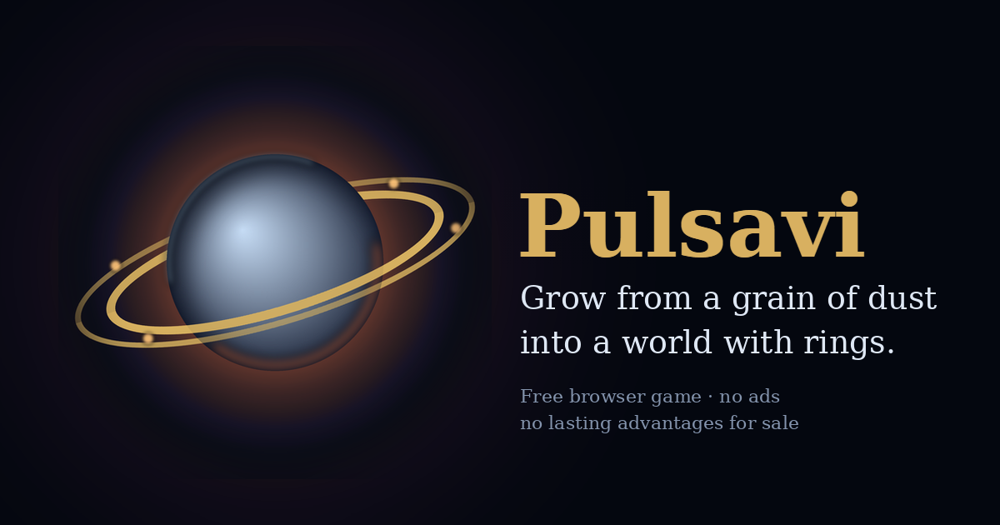

Talumi
A free browser io game where you start as a grain of dust and grow into a world with rings and moons.

What the game is
Talumi belongs to the io genre: a single open field, everything on it is either food or a threat, and the only thing that separates the two is size. You begin at 24 mass, roughly a speck. Debris scattered across the field feeds you slowly; swallowing a rival feeds you instantly.
What makes it different from the games it descends from is that your body changes visibly as you grow. At 60 mass craters appear. At 240 the core starts to melt and heat shows through cracks. At 800 an atmosphere holds. At 2000 you carry rings and three moons. You can read another player's progress across the screen without a single number.
How to play
Moving
Mouse on a computer. On a phone, drag anywhere — the stick is relative, so your thumb never covers your own body. The game runs in landscape and shows exactly the same amount of field on a phone as on a desktop, so neither device has an advantage.
Splitting
Space, or the on-screen button. Splitting is the heart of the game: a small body always outruns a large one in a straight line, so splitting is the only way to catch anything. It is also how you die, because each piece is half your mass and stays separate for eight to twenty-four seconds before merging back.
Shedding mass
W, or the second button. The lump you throw grows with your own size. Feed enough of it into a pulsar and the pulsar spits out a new one along your line of fire — that is how a hazard becomes a weapon against someone larger than you.
Pulsars
Spiked bodies scattered across the field. Below 240 mass you pass through them and can hide behind them. Above it, covering one tears you into as many as thirteen pieces and leaves you easy prey for anyone smaller.
The four modes
| Mode | Field | How it ends |
|---|---|---|
| Open space | 9000 units, 40 rivals | When you die |
| Battle royale | 6000 units, 24 rivals, everyone equal | Last body standing, about five minutes |
| Clan battle | Mirrored arena, two clans | Highest clan mass after five minutes |
| Friendly match | Mirrored arena, equal start | Practice only, no rewards |
Clan battles and friendly matches use mirrored arenas on purpose: pulsars sit in point-symmetric pairs and both sides start on equivalent ground. An arranged match on the open map would be unfair, because starting position and debris are random there.
Progression and skins
There are 100 levels and 46 skins. Twenty-one unlock by level, twenty-five with Ore, the currency you win by playing. Ore comes from your peak mass, from the bodies you swallow, from the stages you reach, and from beating your own best run.
Skins carry a rank from I to V, and the rank is visible on the body: higher ranks are speckled, then banded, then split by glowing cracks, then spiked, and at rank V they pulse and carry a belt of shards. Four rank VI skins cost hundreds of hours and do things nothing else does: a dust trail, a counter-rotating halo, light bending at the rim, cracks cycling through the spectrum. Size tells you who is currently full. Rank tells you who is actually good.
What this game refuses to do
No advertisement can interrupt a round — the minimum gap between breaks is enforced in the code, not promised in a policy. Nothing on sale gives a lasting advantage: every skin can be earned by playing, buying only skips the wait, and the start bonus is caught up within about thirty seconds. There are no random loot boxes. There are no cookies, no tracking, and no third-party content on the page.
These are deliberate answers to the complaints players make about the games this one descends from: an advertisement after nearly every death, bots posing as opponents, unmoderated names, and dying within a second of spawning. Talumi filters names to characters anyone can type, protects you for five seconds after spawning, and chooses your starting position as the safest of forty-eight candidates.
Questions
Is Talumi free?
Yes. There is nothing to buy and no account required to play.
Does it work on a phone?
Yes, in landscape, with on-screen buttons for splitting and shedding. It can be installed to the home screen and then runs full screen, offline included.
Is it multiplayer?
Not yet. The current release plays against computer-controlled rivals that split to hunt you, flee toward open space, and use pulsars as cover. Real multiplayer needs a server and is the next step.
Who made it?
An independent developer. The game is a single HTML file under one megabyte with no libraries and no external content of any kind.